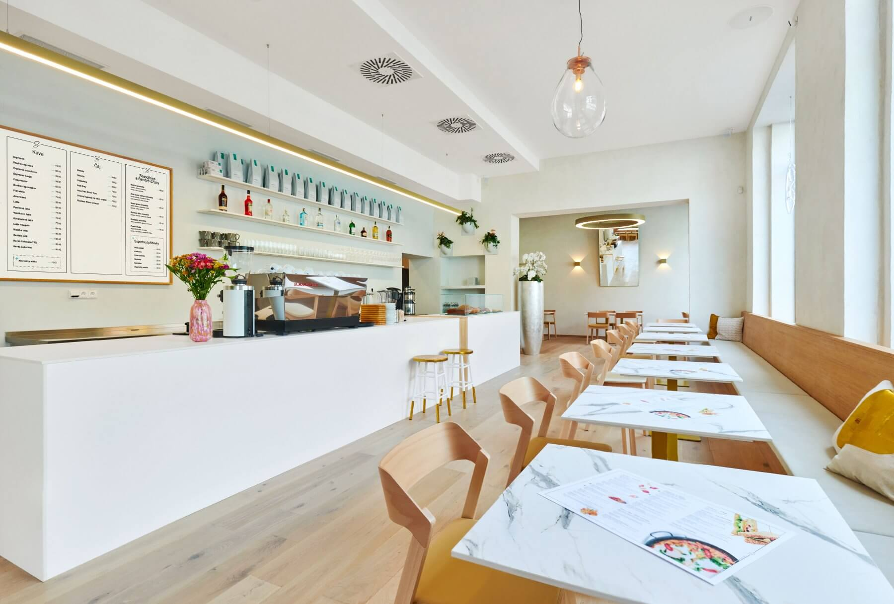
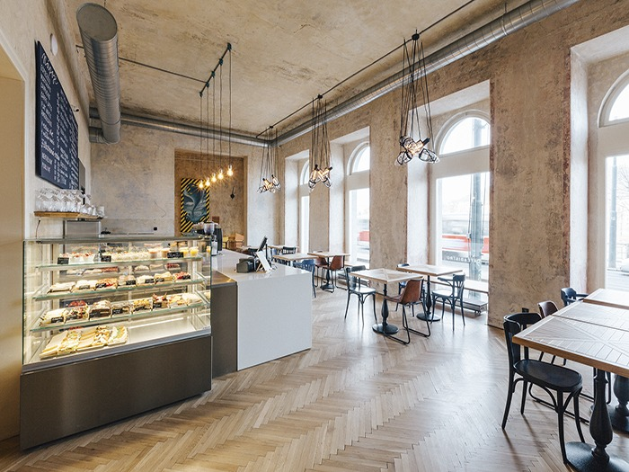
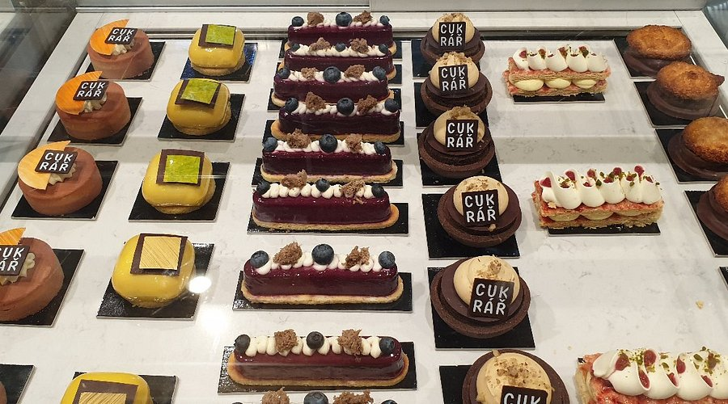
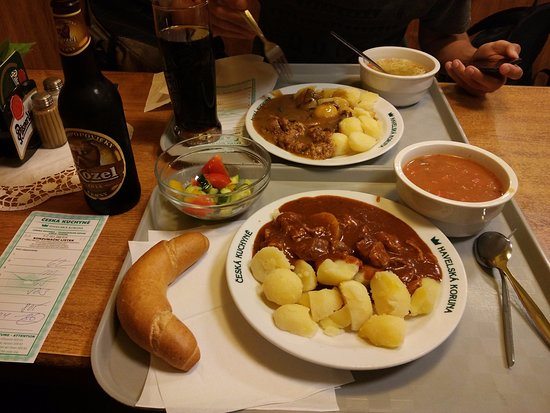
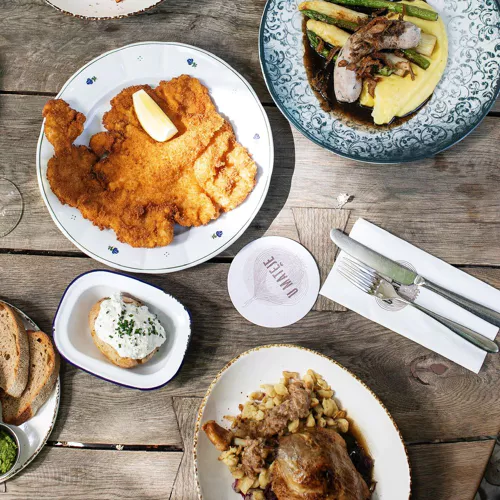

Whether you want to scope out an international McDonald’s or try a traditional Svíčková, Prague has you covered. There’s no shortage of great food throughout the city. The hardest decision you will have to make when it comes to dinner is just how adventurous you want to be.

The Spot

Smetanaq

Cukrář Skála

Havelská Koruna

U Matěje
A great brunch place in the Anděl neighborhood. Stop in for a coffee or a club sandwich.
If you are on a stroll along the Vltava River and are feeling a bit peckish, stop in for a sandwich and a refreshing drink.
Hidden down an alley, this chic bakery full of sweet treats feels like a hidden treasure in downtown Prague.
Not English-friendly. However, if you are adventurous and you are looking for an authentic local experience, try this cafeteria style restaurant just off of the Old Town Square.
Located in a quiet neighborhood just a few tram stops from downtown, U Matěje puts a modern twist on Czech traditional dishes.